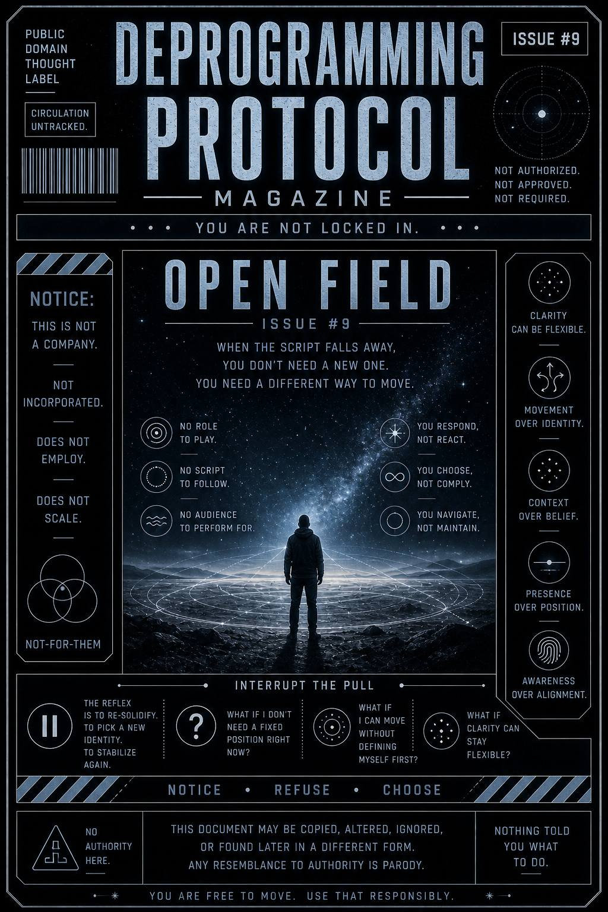

When nothing is telling you who to be…
what happens next is not obvious.
There’s no role to step into.
No script to follow.
No audience to perform for.
Just space.
And the ability to move within it.
This issue exists to explore what it means to operate without fixed identity structures guiding behavior.
It teaches you to notice when:
…and how that state changes how you move through the world.
Without a script…
nothing fires automatically.
There’s no:
At first, this feels unfamiliar.
Then something shifts.
Instead of reacting…
you respond deliberately.
Instead of maintaining identity…
you navigate context.
Instead of repeating patterns…
you adapt in real time.
Nothing is locked.
But nothing is missing either.
You’re still there.
Just not pre-written.
The reflex now is different.
Not to react…
but to re-solidify.
To pick a new identity.
To stabilize again.
Pause there.
Yeah. You.
Still here.
Good.
Ask:
Try it:
You’re not losing yourself.
You’re not locking yourself in.
This publication does not define the field.
No framework is required to operate here.
No identity must be selected.
No position must be maintained.
Any system that attempts to stabilize this state
should be held lightly.